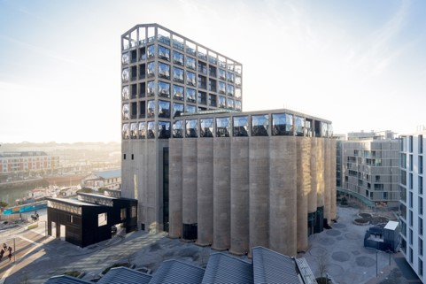
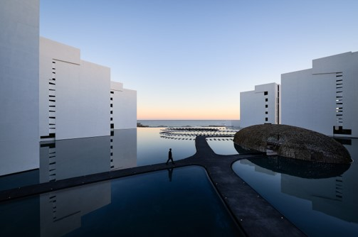
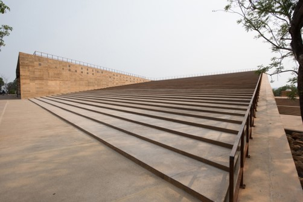
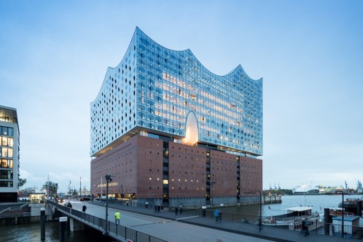
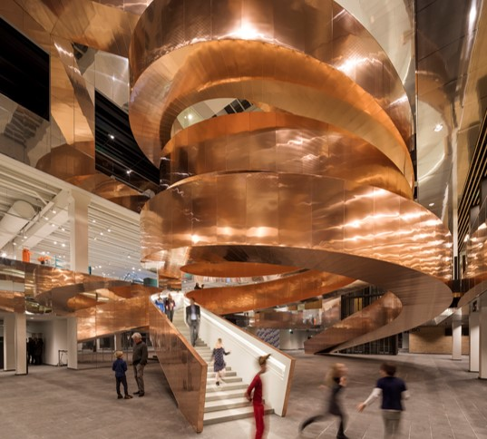

Museo Zeitz de Arte Contemporáneo de África / Heatherwick StudioAclamado como "La respuesta de África al Tate Modern" cuando se inauguró en septiembre pasado, el Museo de Arte Contemporáneo de África (MOCAA) se convirtió en el museo más grande del mundo dedicado al arte contemporáneo de África y su diáspora. |
 |
Mar Adentro / Miguel Angel AragonésOriginalmente diseñado por el arquitecto mexicano Miguel Ángel Aragonés y recientemente renovado, el Viceroy Los Cabos se asemeja a una serie de cubos blancos que parecen flotar en piscinas azules reflectantes. |
 |
Teopanzolco Cultural Center / Isaac Broid + PRODUCTORALas formas triangulares del Centro Cultural Teopanzolco reflejan las pirámides aztecas cercanas para crear, dijo Broid, un lugar donde "la vida cultural contemporánea establece un diálogo continuo con nuestro pasado". |
 |
Elbphilharmonie Hamburgo / Herzog & de MeuronTan llamativa visualmente como la sala de conciertos diseñada por Herzog y de Meuron, es una torre de vidrio colocada sobre un almacén de ladrillo gigante rodeado por tres lados con agua, genera una acústica que se roba el espectáculo. |
 |
Experimentarium / CEBRAUna escalera de caracol gigante de cobre, diseñada con base en la estructura del ADN, marca la pauta para este museo de ciencias que reabrió en 2017 después de una extensa renovación. |
 |